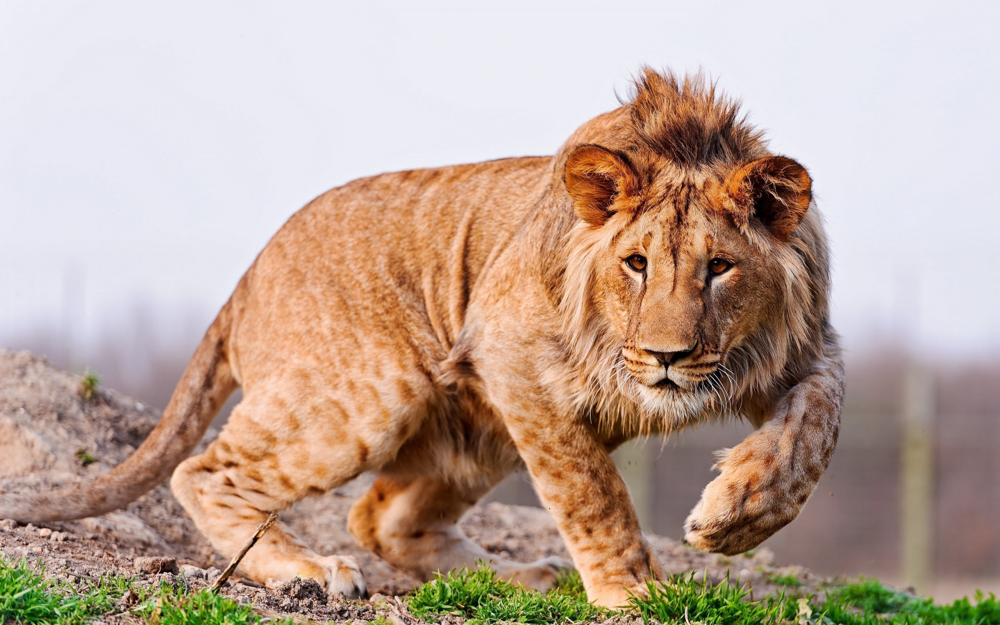

LIONS
DID YOU KNOW?
- Lions are highly social animals that live in groups called prides. A pride typically consists of several related lionesses, their cubs, and one or more dominant males known as coalition males. The pride structure helps with hunting and protection.
- Lions are apex predators, meaning they are at the top of the food chain in their ecosystems. They primarily prey on large herbivores such as zebras, wildebeests, and antelopes, working together in coordinated hunts to take down their prey.
- Lions are known for their powerful roars, which can be heard over long distances. Roaring is used to communicate with pride members, establish territory, and intimidate potential rivals. Each lion's roar is unique, allowing individuals to be identified by their vocalizations.
- One of the most distinctive features of lions is the mane of hair that encircles the neck and head of adult males. The mane varies in color and size, and it's often a sign of maturity and dominance. Lionesses do not have manes.
- Lions are territorial animals and defend their territories from other prides and intruding males. Territory size depends on factors like prey availability and resources. Maintaining territory is crucial for securing access to food and mates.
WHERE YOU WILL FIND THEM?
You will find the lions at pen E23, North East of the Zoo, next to the Northern Frontier section.